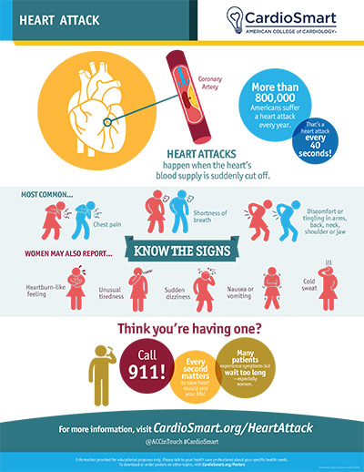

Recognizing a Heart Attack and Getting Help Fast
A heart attack happens when blood flow to part of the heart muscle is suddenly blocked, usually by a blood clot that forms over a ruptured cholesterol plaque. Time is muscle — the longer the heart goes without oxygen, the more heart muscle is lost. Knowing the signs and acting immediately is one of the most important things you can do for yourself or someone you love.
If you think you are having a heart attack, call 911 now
Do not drive yourself. Do not wait “to see if it passes.” Calling 911 lets emergency crews begin care on the way and takes you to a hospital prepared to treat you quickly.
The Warning Signs
The classic sign is discomfort in the center or left side of the chest that feels like uncomfortable pressure, squeezing, fullness, or pain. But heart attack symptoms go beyond the chest, and they don't always announce themselves dramatically:
- Chest discomfort — pressure, squeezing, fullness, or pain that lasts more than a few minutes or goes away and comes back.
- Discomfort in other areas — pain or pressure spreading to one or both arms, the back, neck, jaw, or upper stomach.
- Shortness of breath — with or without chest discomfort.
- Other signs — cold sweat, nausea, vomiting, or lightheadedness.

Symptoms Can Differ, Especially in Women
Women, older adults, and people with diabetes are more likely to have atypical symptoms without classic chest pain. These can include:
- Shortness of breath
- Nausea, vomiting, or indigestion-like discomfort
- Unusual fatigue
- Pain in the jaw, neck, back, or upper abdomen
- Lightheadedness
Trust your body. If something feels seriously wrong — especially with more than one of these symptoms — get medical attention without delay.
What to Do Right Away
- Call 911 immediately. Say “I think I'm having a heart attack.”
- Stop and rest — sit or lie down and avoid exertion.
- If you have been prescribed nitroglycerin for chest pain and your doctor told you to take it, take it as directed while waiting for help. Do not take someone else's nitroglycerin.
- Ask a dispatcher about aspirin. Chewing a plain aspirin (if you are not allergic and there is no reason to avoid it) can help, but let the 911 dispatcher or a healthcare professional guide you first.
- If the person is unresponsive and not breathing normally, begin CPR. If an automated external defibrillator (AED) is nearby, use it.
The single most important step is calling 911 without delay. Everything else is secondary.
What Causes a Heart Attack
Most heart attacks happen when a cholesterol plaque inside a coronary artery ruptures and a blood clot forms over the break, suddenly blocking the artery and cutting off blood flow to part of the heart muscle. That heart muscle damage is what makes the episode a heart attack (myocardial infarction). The plaque-and-clot blockage is driven by the same risk factors as coronary artery disease — smoking, high blood pressure, high cholesterol, diabetes, obesity, inactivity, and stress. (See our coronary artery disease page for more on plaque and prevention.)
How It Is Treated
Modern treatment for a heart attack is highly effective when started early. The priorities are to reopen the blocked artery as fast as possible and to protect the heart. This is called the “door-to-balloon time” — the urgency is real.
- Catheterization (percutaneous coronary intervention): the usual emergency treatment — a balloon opens the blocked artery and a stent is placed to keep it open. (See our cardiac catheterization page.)
- Clot–breaking medication (thrombolysis) when catheterization isn't quickly available.
- Blood thinners and medications to relieve symptoms and ease the heart's workload.
- Ongoing care: after the emergency, you'll start cholesterol-lowering and blood pressure medications, cardiac rehabilitation, and lifestyle changes to keep plaque stable and prevent a recurrence.
Lowering Your Risk
Most heart attacks are preventable. The same steps that treat coronary artery disease prevent first and repeat events:
- Don't smoke — quitting is the single best thing you can do.
- Control blood pressure, cholesterol, and diabetes.
- Reach and maintain a healthy weight.
- Be active most days of the week.
- Eat a heart-healthy diet and limit sodium and alcohol.
- Manage stress and treat sleep apnea.
- Take your prescribed medications every day — even when you feel well.
Key Takeaways
- Chest pressure or pain lasting more than a few minutes can be a heart attack — trust it.
- Symptoms can be subtle, especially in women, older adults, and people with diabetes.
- Call 911 immediately; do not drive yourself and do not wait.
- Time is muscle — early hospital care saves heart muscle and lives.
Reliable Sources
- CardioSmart (American College of Cardiology), Heart Attack — infographic
- American Heart Association, Warning Signs of a Heart Attack
- CDC, About Heart Attack
This page is for general education only and does not replace advice from your doctor. In an emergency, always call 911.